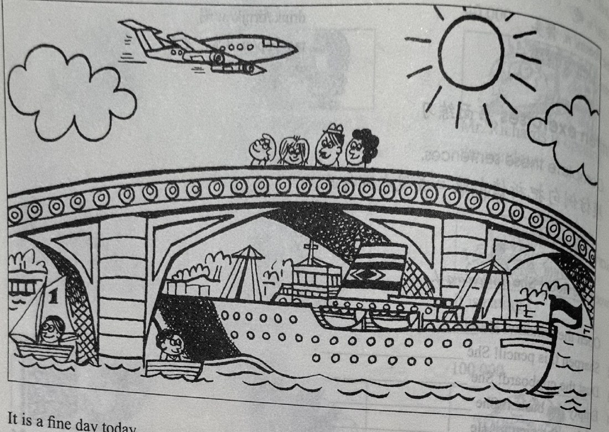

Lesson content · 课文
Lesson 33: A fine day · 晴天
Listen then answer this question. 听录音，然后回答问题。
Where is the Jones family?
琼斯一家人在哪里？
It is a fine day today.
There are some clouds in the sky, but the sun is shining.
Mr. Jones is with his family.
They are walking over the bridge.
There are some boats on the river.
Mr. Jones and his wife are looking at them.
Sally is looking at a big ship.
The ship is going under the bridge.
Tim is looking at an aeroplane.
The aeroplane is flying over the river.

New words and expressions · 生词和短语
| Word · 单词 | Pronunciation · 音标 | Meaning · 词义 |
|---|---|---|
| day | /deɪ/ | n. 日子 |
| cloud | /klaʊd/ | n. 云 |
| sky | /skaɪ/ | n. 天空 |
| sun | /sʌn/ | n. 太阳 |
| shine | /ʃaɪn/ | v. 照耀 |
| with | /wɪð/ | prep. 和……在一起 |
| family | /ˈfæməli/ | n. 家庭（成员） |
| walk | /wɔːk/ | v. 走路，步行 |
| over | /ˈəʊvə/ | prep. 跨越，在……之上 |
| bridge | /brɪdʒ/ | n. 桥 |
| boat | /bəʊt/ | n. 船 |
| river | /ˈrɪvə/ | n. 河 |
| ship | /ʃɪp/ | n. 轮船 |
| aeroplane | /ˈeərəpleɪn/ | n. 飞机 |
| fly | /flaɪ/ | v. 飞 |
Notes on the text · 课文注释
- It is a fine day today. 句中的 it 是指天气。
- some clouds，几朵云。some 可以修饰可数名词，也能修饰不可数名词。
Chinese translation · 参考译文
今天天气好。
天空中飘着几朵云，但阳光灿烂。
琼斯先生同他的家人在一起。
他们正在过桥。
河上有几艘船。
琼斯先生和他的妻子正在看这些船。
萨莉正在看一艘大船。
那船正从桥下驶过。
蒂姆正望着一架飞机。
飞机正从河上飞过。
Practice · 课文练习
Understand the lesson · 课文理解
Comprehension · 理解题
Answer the question about the lesson text. 根据课文回答问题。
-
comprehension: Comprehension · 理解题 — Where is the Jones family?
Practice worksheet · 配套练习
A. A fine day
Read this. Fill in the missing words. 填空。
-
worksheet: A. A fine day — It’s a ____ day today.
There are ____ small white ____ in ____ sky, but the sun is ____.
Mr. Jones and ____ family are ____ over ____ bridge.
There ____ some small boats ____ the river and a big ship is ____ under ____ bridge.
Mr. and Mrs. Jones and Sally are ____ at ____ ship.
Tim is ____ ____ an aeroplane.
The ____ is ____ over ____ river.
B. Structure
Write the -ing forms. 写出以下动词的 -ing 形式。
| Add -ing | Take off the -e and add -ing |
|---|---|
| walk → walking | shine |
| look | shave |
| go | type |
| fly | give |
Example · 例句
walk → walking
-
worksheet: B. Structure — look
-
worksheet: B. Structure — go
-
worksheet: B. Structure — fly
-
worksheet: B. Structure — shine
-
worksheet: B. Structure — shave
-
worksheet: B. Structure — type
-
worksheet: B. Structure — give
C. Prepositions
Choose: with, under, over, at, in, on. 选择恰当的词填空。
-
worksheet: C. Prepositions — Mr. Jones and his family are walking ____ the bridge.
-
worksheet: C. Prepositions — Sally is looking ____ a big ship.
-
worksheet: C. Prepositions — The ship is going ____ the bridge.
-
worksheet: C. Prepositions — The children are ____ their mother and father.
-
worksheet: C. Prepositions — The sun is shining ____ the sky.
-
worksheet: C. Prepositions — There are some small boats ____ the river.
Grammar practice · 语法练习
I. Complete sentences with present continuous forms
- There ___ (be) some people at the seaside. It ___ (be) a fine day and the sun ___ (shine). It ___ (not rain). Some men and women ___ (sit) on the beach. They ___ (eat) ice creams or ___ (drink) tea or coffee. A man ___ (look) at the children. They ___ (play) on the sand near the sea. What ___ the dog ___ (do)? It ___ (sleep) under a big umbrella.
II. Make dialogues using the cues
boys/play football/girls/sing a song
Are the boys playing football? Yes, they are. Are the girls playing football, too? No, they aren't. They're singing a song.
boys/sweep the floor/girls/clean the desks and chairsyou/watch television/your friends/listen to the radiothe dogs/eat bones/the cats/eat fishthe children in this room/write/the children in that room/cry
Your notes and answers
Use this space for longer responses or exercises that do not have an individual answer box.